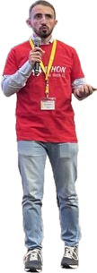
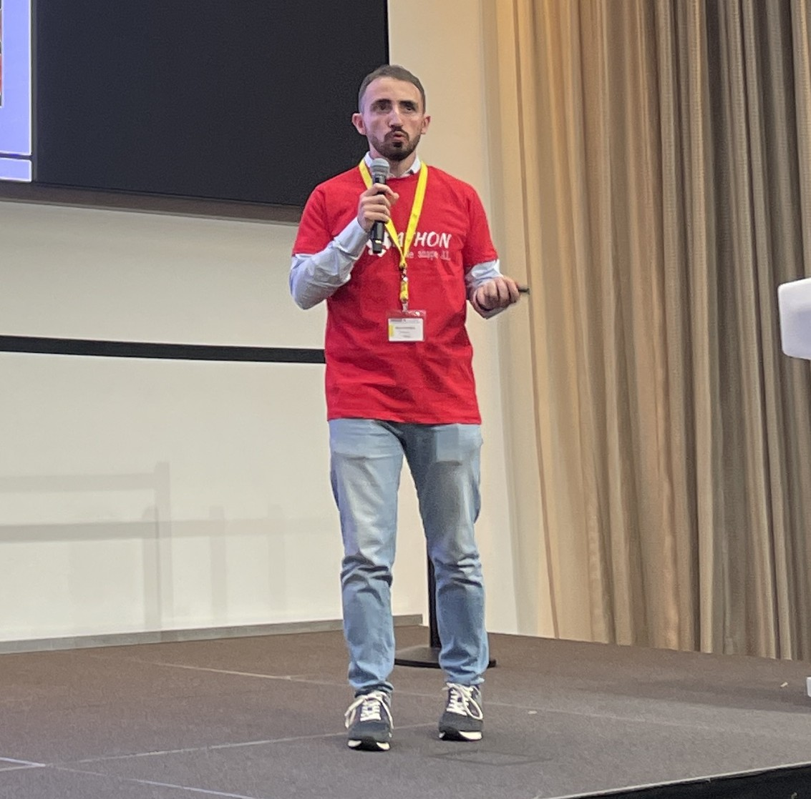

Costruisco sistemi AI. Poi insegno alle persone a usarli.
Mirko Calcaterra

Engineer
Card2026

- nome
- Mirko Calcaterra
- base
- Datapizza
- alma
- Polimi
- focus
- RAG · GeoAI
Matematico di formazione, geospaziale per vocazione. Lavoro dove i modelli incontrano le persone: costruisco sistemi di GenAI in Datapizza e aiuto le aziende a capire dove l'AI genera valore davvero.
Ho una laurea in Ingegneria Matematica e una magistrale in Geoinformatics Engineering al Politecnico di Milano. La matematica mi ha dato il metodo, la geoinformatica i dati più ostinati: nuvole di punti, immagini satellitari, segnali radar.
Oltre al lavoro in Datapizza, che va dalla formazione in aula fino a governance e AI Act, sono Ambassador Polimi per Smart Infrastructures e Match Analyst per squadre di pallavolo.
- 25
- articoli sul blog, in italiano e inglese
- 2
- lauree al Politecnico di Milano
- 1
- libro: Appunti di Inferenza Statistica
Tre mestieri, un solo filo
Costruire sistemi, studiare dati difficili e spiegarli bene sono la stessa abilità vista da tre lati: capire davvero come funziona una cosa.
-
EngineeringRAG · Agents
Costruisco.
Pipeline RAG, chatbot multimodali e sistemi multi-agente pensati per reggere l'uso reale, non solo la demo. Contribuisco al framework open source datapizza-ai.
-
GeoAI3D · EO · SAR
Ricerco.
Point cloud 3D e 6D, LiDAR, SAR ed Earth Observation: dati complessi, spesso sporchi, quasi sempre geospaziali. In tesi ho ripulito nuvole di punti per scovare discariche illegali.
-
DivulgazioneQ.E.D.
Insegno.
Formazione aziendale anche per grandi aule, articoli su questo blog e Q.E.D., il mio progetto di divulgazione su Instagram. Rigore tecnico, zero gergo inutile. @quasi.evidente
Scrivo per capire, poi per spiegare
AI engineering, GeoAI, privacy e qualche deviazione verso fisica e linguaggi di programmazione. Gli ultimi pezzi, freschi di build.
Gli articoli sono sul blog.
Da dove arrivo
-
2025 → oggi
AI Engineer & AI Adoption SpecialistDatapizza
Sistemi RAG avanzati, chatbot multimodali e workflow agentici; validazione di PoC e cookbook tecnici per la community. Sul fronte adoption, percorsi formativi su misura, change management e presidio di governance e compliance.
-
2022 → oggi
Match AnalystPallavolo
Leggo il gioco attraverso i dati: pattern, tendenze e dashboard in Python (Dash) e R (Shiny) che aiutano staff e squadra a decidere.
-
Laurea magistrale
Geoinformatics EngineeringPolitecnico di Milano
Tesi su outlier, rumore e occlusioni in point cloud 6D per migliorare il rilevamento di discariche illegali: una pipeline PyTorch che rimuove la vegetazione e isola le anomalie.
-
Laurea triennale
Ingegneria MatematicaPolitecnico di Milano
Statistica, modellazione e ragionamento quantitativo. Da qui è nato anche Appunti di Inferenza Statistica, il libro pubblicato con Fubini Tonelli.